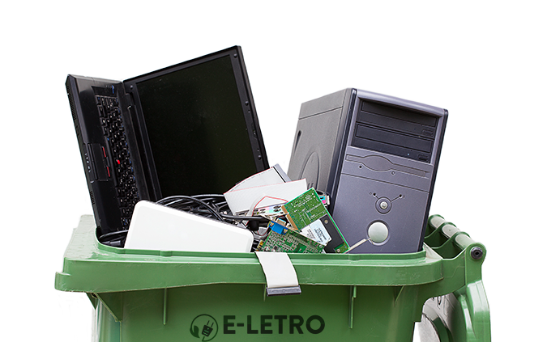

O que é Lixo Eletrônico?
O lixo eletrônico, também conhecido como e-lixo, é composto por produtos que não têm mais valor por falta de utilização, substituição ou quebra. A categoria inclui "produtos da linha branca", como refrigeradores, máquinas de lavar e micro-ondas, além de aparelhos eletrônicos como televisores, computadores, telefones celulares, tablets, drones, assim como pilhas, baterias, cartuchos e toners.
Os aparelhos devem ser reciclados de forma cuidadosa por empresas especializadas. Caso contrário, o risco de contaminação para o meio ambiente e perigo à saúde humana são altos.

O que acontece quando descartamos o lixo eletrônico de forma incorreta?
O descarte incorreto de lixo eletrônico pode causar uma série de problemas de saúde devido à liberação de substâncias tóxicas e contaminantes presentes nos dispositivos. Sendo eles:
Contaminação por Metais Pesados, Chumbo: Presente em soldas e placas de circuitos, o chumbo pode causar danos ao sistema nervoso, problemas renais e anemia.
Mercúrio: Encontrado em lâmpadas fluorescentes e alguns tipos de baterias, o mercúrio é neurotóxico e pode causar danos ao cérebro e ao sistema nervoso, além de problemas renais e respiratórios.
Cádmio: Usado em baterias recarregáveis, o cádmio pode causar doenças pulmonares e renais, e é carcinogênico.
Poluição do Ar e Liberação de Fumaça Tóxica: A queima inadequada de lixo eletrônico pode liberar gases tóxicos e partículas finas no ar, que podem causar problemas respiratórios e cardiovasculares.
Efeitos na Saúde Ocupacional: Trabalhadores de Reciclagem: Em locais onde o lixo eletrônico é reciclado de forma inadequada, os trabalhadores podem estar expostos a substâncias tóxicas, levando a problemas respiratórios, dermatológicos e outros problemas de saúde.
Impactos Indiretos: Riscos de Acidentes: Equipamentos quebrados ou mal descartados podem causar ferimentos, como cortes e contusões durante o manuseio inadequado.
Contaminação da Água e Solo e Vazamento de Substâncias Químicas: Quando o lixo eletrônico é descartado em aterros sanitários, substâncias químicas podem vazar e contaminar o solo e a água subterrânea, afetando o ecossistema e saúde humana, especialmente em áreas próximas.
Onde descartar os seus Lixos Eletrônicos
Pontos de Coleta Especializados e Centros de Reciclagem de Eletrônicos: Verifique se há algum próximo à sua localização. Coletas Programadas: Algumas cidades oferecem eventos periódicos de coleta de lixo eletrônico.
Programas de Reciclagem de Fabricantes: Pontos de Coleta de Lojas: Grandes redes de lojas de eletrônicos e eletrodomésticos, muitas vezes possuem caixas de coleta para lixo eletrônico. Serviços de Reciclagem e Empresas Especializadas. Empresas de Reciclagem: Empresas especializadas em reciclagem de lixo eletrônico podem oferecer serviços de coleta e descarte. Elas garantem que os oponentes sejam tratados adequadamente.
Programas Municipais: Serviços de Gestão de Resíduos: Verifique o site da sua prefeitura ou órgão responsável pelo gerenciamento de resíduos sólidos.
Organizações Não Governamentais: Algumas ONGs e iniciativas comunitárias promovem campanhas de coleta e reciclagem de lixo eletrônico. Escolas e instituições: Algumas escolas e instituições podem realizar coletas de lixo eletrônico como parte do programa de conscientização ambiental.